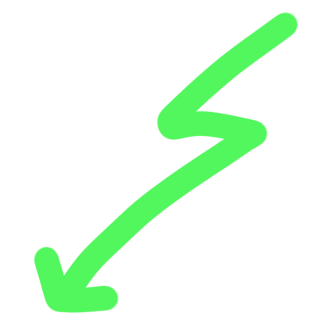
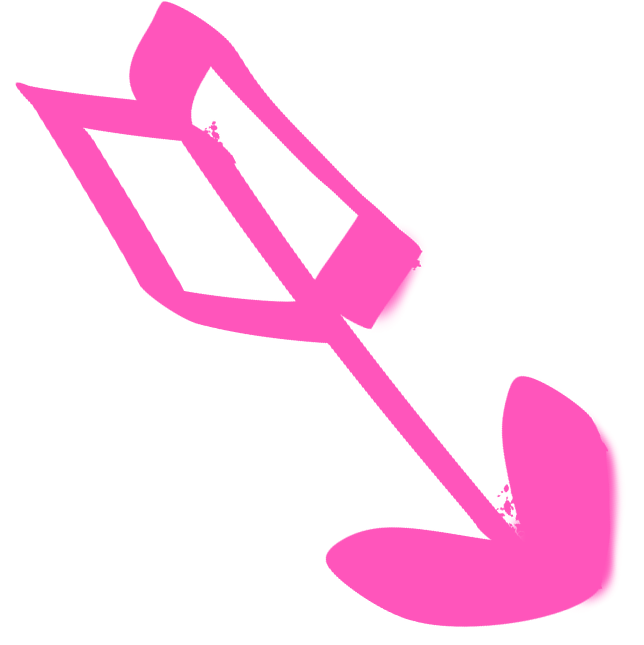
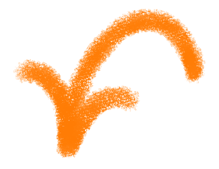
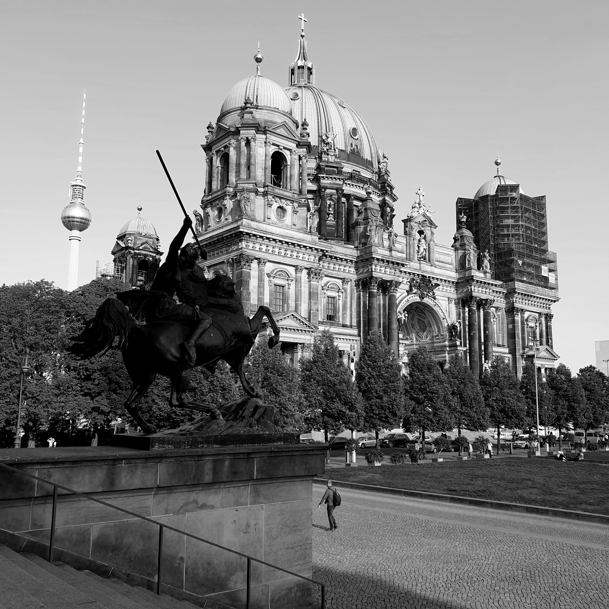
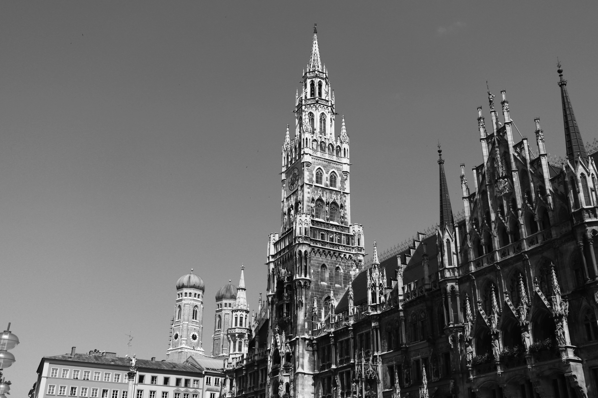
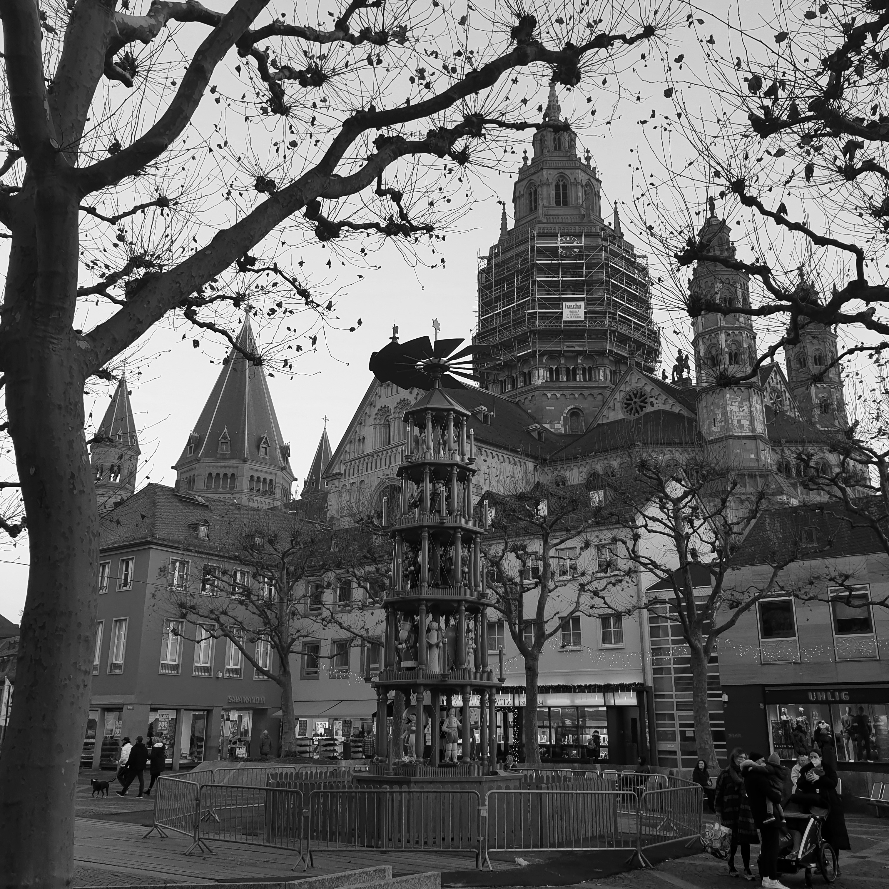
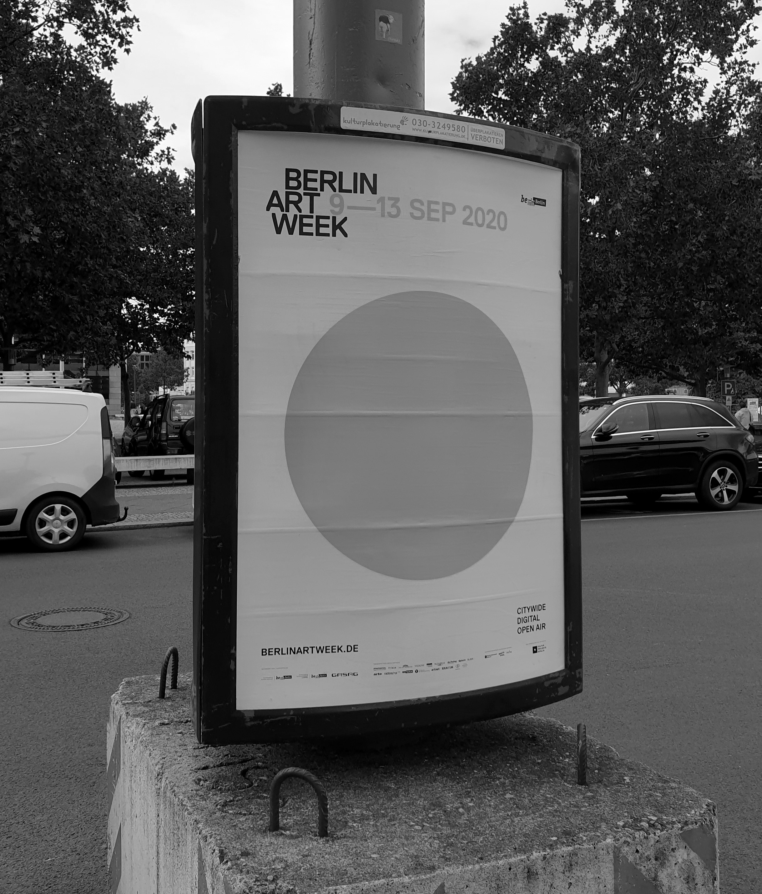
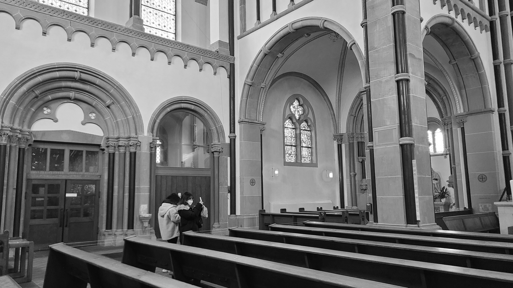

(여행 관련 글 들어갈 부분...)국가는 노인과 청소년의 복지향상을 위한 정책을 실시할 의무를 진다. 언론·출판에 대한 허가나 검열과 집회·결사에 대한 허가는 인정되지 아니한다. 학교교육 및 평생교육을 포함한 교육제도와 그 운영, 교육재정 및 교원의 지위에 관한 기본적인 사항은 법률로 정한다. 신체장애자 및 질병·노령 기타의 사유로 생활능력이 없는 국민은 법률이 정하는 바에 의하여 국가의 보호를 받는다. 대통령은 제3항과 제4항의 사유를 지체없이 공포하여야 한다. 원장은 국회의 동의를 얻어 대통령이 임명하고, 그 임기는 4년으로 하며, 1차에 한하여 중임할 수 있다. 모든 국민은 근로의 권리를 가진다. 국가는 사회적·경제적 방법으로 근로자의 고용의 증진과 적정임금의 보장에 노력하여야 하며, 법률이 정하는 바에 의하여 최저임금제를 시행하여야 한다. 선거에 있어서 최고득표자가 2인 이상인 때에는 국회의 재적의원 과반수가 출석한 공개회의에서 다수표를 얻은 자를 당선자로 한다. 공무원의 신분과 정치적 중립성은 법률이 정하는 바에 의하여 보장된다. 헌법재판소는 법관의 자격을 가진 9인의 재판관으로 구성하며, 재판관은 대통령이 임명한다. 국가는 과학기술의 혁신과 정보 및 인력의 개발을 통하여 국민경제의 발전에 노력하여야 한다. 이 헌법에 의한 최초의 대통령의 임기는 이 헌법시행일로부터 개시한다. 정부는 회계연도마다 예산안을 편성하여 회계연도 개시 90일전까지 국회에 제출하고, 국회는 회계연도 개시 30일전까지 이를 의결하여야 한다. 대통령이 임시회의 집회를 요구할 때에는 기간과 집회요구의 이유를 명시하여야 한다. 공무원의 직무상 불법행위로 손해를 받은 국민은 법률이 정하는 바에 의하여 국가 또는 공공단체에 정당한 배상을 청구할 수 있다. 이 경우 공무원 자신의 책임은 면제되지 아니한다.
Travel Record
The sound reminds me of...








Destination